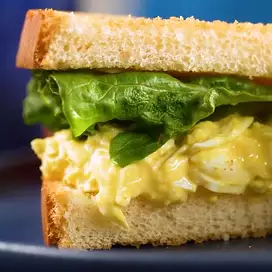

Home
Delicious Egg Salad for Sandwiches

Description
This is a wonderful-tasting egg salad sandwich that you will definitely
devour. It's really good on rye.
Incredients
- 8 eggs
- 1/2 cup mayonnaise
- 1 teaspoon prepared yellow mustard
- 1/4 cup chopped green onion
- salt and pepper to taste
- 1/4 teaspoon paprika
Steps
-
Place egg in a saucepan and cover with cold water. Bring water to a boil
and immediately remove from heat. Cover and let eggs stand in hot water
for 10 to 12 minutes. Remove from hot water, cool, peel and chop.
-
Place the chopped eggs in a bowl, and stir in the mayonnaise, mustard
and green onion. Season with salt, pepper and paprika. Stir and serve on
your favorite bread or crackers.